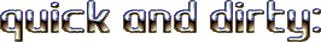
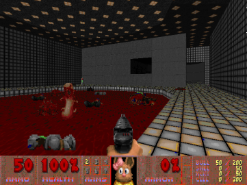
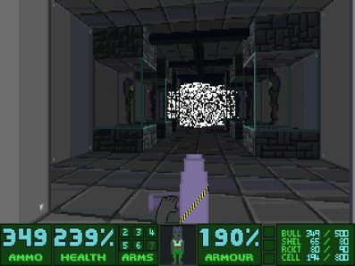
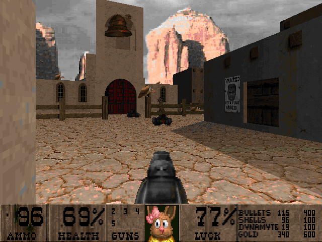
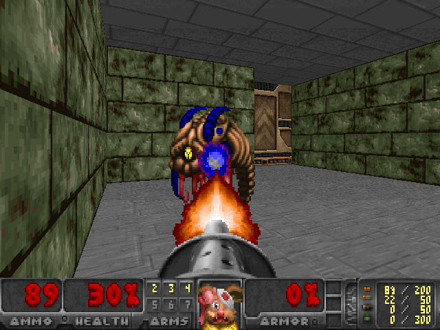
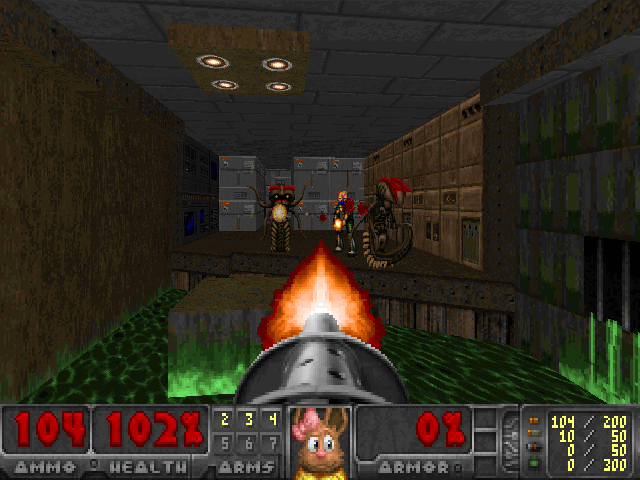

<!DOCTYPE html>
<html>
<title>Quickie and Dirty: Part One | Doom: Rediscovering History</title>
	<meta charset="utf-8">
	<meta content="OWLY.FANS" property="og:title" />
	<meta content="Because Sometimes Doom is just bad" property="og:description" />
	<meta property="og:image" content="https://owly.fans/floppy.png">
	<meta content="#9B4F96" data-react-helmet="true" name="theme-color" />
    <meta name="keywords" content="owly, cass python, neocities, neozones, brit, uk, archive, site ran by a stud, england, wales">
	<link rel="shortcut icon" type="image/x-icon" href="../../../favicon.ico">
    <link rel="stylesheet" href="../../style.css">
    </html>
	    <body><p><a href="../">Back to index</a></p>
			<p><center><br></center></p>
			<p></p>
			<hr>


			<p></p>
			
				<p><div class="tag">

<h3>Text Disclaimer</h3>
		<p>While the thoughts and opinions are all mine, I want to make it clear that I used ChatGPT to help me give suggestions and improve things like spelling (I have dyslexia) and the flow of the text. In other words, I used AI as an aid to help me fill in the gaps in my work.</p>
			</div><p></p>
						<em>Cass &#xAB;Owly&#xBB; Python, 2024-06-25</em>

<p>Welcome one and all to <strong>Quickie and Dirty: Part One</strong>, a quickly written bunch of Doom WAD reviews stitched together with the format of me wanting to cover them in <strong>Doom: Rediscovering History</strong>, but ultimately not having all that much to say about them that can justify a whole review page for them.</p>

<p>Today, we're going to be looking at 1995's <a href="#OTTAWAU.WAD"><yell>Ottawau</yell>.WAD</a>, <a href="#Mis-Adventures of Dynamite">Mis-Adventures of Dynamite</a>, <a href="#A Fistful of Doom">A Fistful of Doom</a>, and fiannaly <a href="#Mission: BADV (1994)">Mission: BADV (1994)</a> and its <a href="#Mission: BADV (2020)">2020 remake</a>.</p>

	<a href="#OTTAWAU.WAD"><h2><yell>Ottawau</yell>.WAD</h2></a><a name="OTTAWAU.WAD"></a>
			<p><figure>
        <center></center>
				<figcaption><p>The opaning room for <yell>Ottawau</yell>.WAD that shows what is <em>meant</em> to be a swimming pool.</p>
		</figcaption>
		</figure></p>

<p>You don't see Doom maps inspired by schools or universities anymore, so when you do find one, it's probably quite the antique, and <yell>Ottawau</yell>.WAD is just that. As you might have guessed from the title, the place in question is Ottawa University, which seemingly Hell itself has invaded. And you know what? You're the only one who can send 'em back. Who would have thought!

<p>While this isn't the first time I've played a Doom WAD based on a real-life school (see <em><a href="https://doomwiki.org/wiki/The_Unholy_Trinity">The Unholy Trinaty</a></em>), this one doesn't make me want to seek out any others. <yell>Ottawau</yell>.WAD can be a real slog at times. The first map opens with you at what I <em>thought</em> was a hockey rink (it's actually a pool, according to the <yell>ReadMe</yell>) when you come face-to-face with monsters. A lot of the first map falls into what I consider Doom cute, where the author, Jean-Serge Gagnon, tried to recreate real-life things in the game, like trees and, of course, the pool.

<p>It's ambitious, for sure, but just because «many, many, many weeks of hard work!» went into this, doesn't mean I'm going to enjoy it. The first level had its moments, but the second level is where I really lost interest. Shotgunning rooms full of retextured imps, going on tedious key-searching quests, and finding empty rooms with no ammo or health packs made me want to put down this mod and do something else. And that's exactly what I did. Level three made me quit.

<p>The main issue with the mapset as a whole is its lack of tight execution. Many times, you'll be running around the university hallways, checking your automap to see where you haven't been, only to find a new area full of imps. You'll lose half your ammo, only to realize it was a waste of time as there are no keys, health packs, armor, or ammo in these new locations. This combination of frustration and tedium makes <yell>Ottawau</yell>.WAD an unfun experience. I feel like this WAD might be someone's favorite, but for me, it's middling at best. Skip this one and play <a href="https://doomwiki.org/wiki/The_Unholy_Trinity">Unholy Trinity</a> instead.</p>

<p>Downloads</p>
	<ul>
	<li><a href="https://www.doomworld.com/idgames/levels/doom/m-o/ottawa09">ottawa09 on the /idgames archive</a></li>
	<li><a href="https://www.doomworld.com/idgames/combos/ou-fix">ou-fix on the /idgames archive</a></li>
</ul> 

<p>See also</p>
	<ul>
	<li><a href="https://onemandoom.blogspot.com/2022/01/ottawauwad-ver-09-ottawa09wad.html"><yell>OneManDoom</yell> review of this WAD</a></li>
</ul> 

			
			
<hr>
			

	<a href="#Mis-Adventures of Dynamite"><h2>Mis-Adventures of Dynamite</h2></a><a name="Mis-Adventures of Dynamite"></a>
			<p><figure>
        <center></center>
				<figcaption><p>The final level of the WAD sees you enter into this almost void-like zone of TV static.</p>
		</figcaption>
		</figure></p>
			
<p>Second review for today, and it's a bit of a weird one. This  <a href="https://doomwiki.org/wiki/Total_conversion">total conversion</a> puts you in the shoes of what I believe is the author's pony original character, in an over-the-top, chaotic mess of colors that I unironically adore. Presenting: <strong>Mis-Adventures of Dynamite</strong>. Each level is unique, clearly driven by a strong vision. The author, Heich, recommends playing it in the <a href="https://doomwiki.org/wiki/Chocolate_Doom">Chocolate Doom</a> source port, so dust off your copy of Chocolate Doom.</p>

<p>Nothing in life is perfect, and Mis-Adventures of Dynamite exemplifies that sentiment. There are some real BS moments in this game. A big one is (spoilers!) at the end, where the last boss is so strong that I became unsure if I was even playing the battle correctly. I pumped so many bullets into this guy that I started doubting myself. Another issue is the sprite work; some enemies are ridiculously small, which can be frustrating. Despite these flaws, the overall experience somehow works well.</p>

<p>This WAD is unlike anything I've played in a while. It reminds me of something from the 1990s, partly due to the sound effects and partly because of the unique, MS Paint-like art style. It even brings to mind the Simpsons' Doom WAD (but better). It's clear that a lot of time and thought went into creating this WAD, and it paid off. It's definitely worth giving a try.</p>
			
			
<p>Downloads</p>
	<ul>
	<li><a href="http://mediafire.com/file/pfu9agdgnbz6kfc/TMoDVan1.2.zip/file">Link to download for the WAD</a></li>
</ul> 

<p>See also</p>
	<ul>
	<li><a href="https://doomworld.com/forum/topic/112259">Doomworld thread on this WAD</a></li>
</ul> 
			
<hr>
			

	<a href="#A Fistful of Doom"><h2>A Fistful of Doom</h2></a><a name="A Fistful of Doom"></a>
			<p><figure>
        <center><a href="fistful.png"></a></center>
				<figcaption><p><em>Dead or alive, you're coming with me!</em></p>
		</figcaption>
					</figure></p>
	
<p>Growing up in my late teens, I was a huge fan of cowboy and spaghetti western films, especially those starring Clint Eastwood. Movies like Dirty Harry and, of course, The Good, The Bad, and The Ugly were my personal picks for the best western flicks. What attracted me to them was the lack of any real established police force, meaning anyone could seek their own revenge, even if, within the narrative, it wasn't always justified.</p>

<p>I've known about A Fistful of Doom for a <em>long</em> time, probably since 2015, thanks to a Mr. Icarus video where he plays through this two-level mapset. In A Fistful of Doom, you play as a cowboy version of DoomGuy who spawns in the middle of what is basically a good old shotgun fight, you versus everyone else in town. Instantly, you're vulnerable due to being out in the open. Fistful is the type of WAD where you're always, and I mean <em>always</em>, running low on health. I've been replaying this since I was 16, so I'm used to this, but a new player won't have my skill. There are areas of the map, especially the first, where enemies can shoot through the walls, making it feel cheap and unfair. <em>How was I supposed to know they could shoot through the walls?</em> Luckily, health is scattered around the map (including a super shotgun ), which is useful, especially the two berserk packs. I opted not to use them to punch the monsters, as they are all hitscan, but simply to regain health. But don't be upset if you have to reset a level to beat it.</p>

<p>Despite my mixed feelings about Fistful, I think it's largely a fun time, where I get to live out my Clint Eastwood power fantasy, to quote Mr. Icarus. However, there is one major flaw: the key management. In pure vanilla Doom, keys are straightforward – you find a door that needs a key, you pick up the key, and you progress. In Fistful, the key icons are small and blend in with the scenery. Additionally, once you pick them up, they don't show up on your HUD, so it's easy to lose track of what you have.</p>

<p>Now, onto the things I liked. <yell>Map02</yell> is the highlight of this whole thing. It's hard to explain why it's good without sitting you down at my desk to play it, but it's a mix of new textures, sounds, and the author's knack for creating a fun yet challenging level. There are so many little things in both levels that add to the atmosphere. I love the posters on the walls with DoomGuy's face and «<yell>wanted</yell>» above it, the silly over-the-top sound effects, and the fact that plasma ammo has been replaced by bags of cash. Everything combines to create a well-crafted experience that I wish we could have more of, rather than just two levels.</p>

<p>Maybe the fact that there are only two levels is a good thing, as it means there is no slump in gameplay, and it remains consistently engaging. But also, I need more. It would be very cool if we could get more out of Fistful, as two maps just aren't enough to sustain my lust for shooting up cowboys.</p>

<hr>	

	<a href="#Mission: BADV (1994)"><h2>Mission: BADV (1994)</h2></a><a name="Mission: BADV (1994)"></a>
			<p><figure>
        <center><a href="badv.png"></a></center>
<figcaption><p>Remember 1994? No? Same here, but it was the year where Doom modding really took off, including for people like AggroBen79 when he made <strong>Mission: BADV</strong>.</p>
<p>Also, yes, that cacodeom is kicking my ass, why don't <em>you</em> try and take a good screenshot and play a game at the sametime?</p>
		</figcaption>
					</figure></p>
<p>I find anything that my parents made before I was born to be quite interesting. It's almost, at least to me, a symbol of a bygone era that I was never a part of, but can now interact with. Not sure if that makes sense, but this brings us to Roebloz, who in 2020, <a href="https://doomworld.com/forum/topic/117724">made a post to Doomworld</a> saying that he found a 1994 Doom WAD that his dad, AggroBen79, made.</p>

<p>During this timeframe, <a href="https://doomwiki.org/wiki/1994_level">1994 wasn't the <em>best</em> time for overall quality of map making</a>; tools used to make fan-made WADs were in their infancy, and normal people were just not used to the idea of creating something in a 3D space. Other factors, like the limitations of vanilla Doom versus now where you can play around with the source code as much as you wish, essentially making your own new game, also played a role. But I bet you already know that as you read <a href="../001">my first Doom review</a>, you good thing!. Due to all this, maps from the early days can very much be a <em>big</em> hit-or-miss. Mission: BADV, in my humble opinion, is not a mess... for the most part.</p>

<p>Oh yes, the look on your face must be priceless. Your jaw must be on the ground right now after reading the previous sentence of me telling you that this '90s WAD isn't a total write-off.</p>

<p>Despite the limited availability of custom PWADs at the time, Mission: BADV shows that AggroBen79 was quite competent in making a fun map at times. You start off in a simple square metallic room with a shotgun and some shells, as well as two imps that are going to get in your way. One thing I notice about early WADs is that the creators loved to give you weapons, especially the shotgun, right at the start of the game. This has mostly died off, but not going to lie, I like being able to pick up a shotgun right at the start and get into the action, rather than having to slowly work my way up from the simple peashooter pistol that you always spawn with.</p>

<p>Moving on from this room, you are now in a hall. If you go for the closest door, you'll be treated to a chaingun, but with the catch of coming face-to-face with a cacodemon. But it's worth it. The room that the caco lives in is very bland, and I am failing to even remember it all that well, even after just replaying the WAD. It's just the brick texture that you'll see a lot if you've ever played episode two of Doom. There's no decorations, only you, the caco, and the chaingun plus some bullets... yay!</p>

<p>To beat the level, you need to enter the third room and do some epic parkour on three boxes that are submerged in toxic sludge. This should be quite trivial to bypass, even for a new player, but it is a little unfair that once you fall in, you can't get out. But once you're on the other side, you've basically won this level, so good work! What's kind of annoying is that right now, I'm writing this review on <a href="../../../me/pc/#Other%20Computers">an old laptop</a> that kind of lags while playing FPS games, making this parkour area harder than it should be, but that's just me coping, isn't it?</p>

<p>The second level can also be fun, if not a bit shorter. Yeah, these levels are not long. I think the most amount of time you'll spend playing this whole thing is less than five minutes tops. It's kind of a shame as I was enjoying it. The second level might be easier than the first, but layout-wise, it is still unique. In one of the rooms, you can get some nice armor simply by pressing a button on the wall. For some reason, this is marked as a secret? I don't know why as it seems trivial to get, but there we go, you've gotten all the secrets in this whole WAD. Yippee for you, I guess.</p>

<p>This brings me to my main issue; while I certainly <em>enjoy</em> these levels, they really just make me want more. But ultimately, this would never happen, and as far as I am aware, Benoit C., AKA AggroBen79, has no other Doom WADs to his name. A one-and-done type deal.</p>

<p>This is a key-hunting map where you need to get a blue skull to open the exit. Again, like the first map, this is simple to achieve. Just enter the second room, shoot some monsters, and then <em>boom</em>, there you go. The final room is protected by a caco and an imp(?). Personally, and this applies to me playing Doom in general, I like to chaingun cacos and get them in a stunlock so they can't fire at me. I do this by spam-clicking the fire key at them.</p>

<p>The final level is a troll. You're going to be fighting a baron, two cacos, and a lost soul is also there for some reason. If you want to beat this level legitimately, then just run circles around the monsters so they infight. You're left with the baron, who you can either chaingun or shotgun, or for you real <em>Doom gentalmen</em>, you can punch to death.</p>

<p>After you've gunned the baron down, I mean punched, I mean <yell>rip 'n' tear</yell> them, you step on a teleporter, and you're off to the next stage.</p>

<p>A few things about this level: first off, I love how mean AggroBen79 was while making it. Just putting a boss monster in a tight space with two other strong mobs and a lost soul that can speed at you and cause you a lot of stress was horrible but amazing, especially for such an early WAD. Second, one thing I missed telling you is that the teleporter is always there, meaning you can step on it and exit this stage easily. And the thing is, okay, play the way you want to, but AggroBen79, for some reason, placed a backpack on the teleport. So if you're running low on ammo, you'll think you can get some back by picking up this item, but no, you're just shown the intermission screen.</p>

<p>Wait, AggroBen79? '79 as in 1979? Hang on, if he was born in '79 and Doom came out in 1993... and this was made in '94 he would have been... <strong>15?!</strong> Oh, okay, so for a WAD made by a teenager, it's quite impressive to me what has been done. Well, Roebloz, your dad made something quite good. And what have <em>you</em> done? Oh, what's this..?</p>
			
			
<hr>
			

	<a href="#Mission: BADV (2020)"><h2>Mission: BADV (2020)</h2></a><a name="Mission: BADV (2020)"></a>
			<p><figure>
        <center><a href="badv_rem.png"></a></center>
				<figcaption><p>Screenshot from <tt>BADV_REM.wad</tt>, Roebloz's remake of their father's map.</p>
		</figcaption>
</figure></p>

<p>So, I guess the expression &#xAB;like father, like son&#xBB; holds true... although I don't know if Roebloz is a boy. Anyway, alongside publishing their dad's original Doom WAD, Roebloz treated us with a two-for-one special by creating a full-on remake of Mission: BADV. This remake stays true to the restrictions of the time, allowing it to be played under pure vanilla Doom. This means, like the 1994 WAD it is based on, it is possible to play this in DOS... or even with Brutal Doom .</p>

<p>Before I continue, I just want to express how much I love the idea of Roebloz taking something their dad made, effectively remastering it, and creating something new yet old out of it. It's so sweet to see. I'd like to hope that their dad not only played the remake but enjoyed it as well. This isn't the first time I've seen people remake old WADs from that era; the Doom community project «<a href="https://doomwiki.org/wiki/1994_Tune-up_Community_Project">1994 Turned Up</a>» comes to mind when thinking about the concept of upgrading otherwise forgotten mods. Although I'm unsure if I can think of any other examples of people taking old WADs and upgrading them to modern standards, this is what makes this 2020 remake not only a fun idea but also unique. It would have been fairly simple for Roebloz to just upload their dad's old work, but this remake takes effort.</p>

<p>There are also crucial changes to this remake that make it a better experience. For example, in the second-to-last room, where in the original you fought off two barons-two barons that you could easily run past. Now in the remake, the fight is optimized to be a lot better; not only is there now a cacodemon in the room, adding a bit of infighting, but you also <em>have</em> a reason to kill the barons. Once dead, they trigger tag 666, which lowers the teleporter for the player to exit the stage.</p>
			
			<p>Now, is this remaster better than the original? Ummm... <em>well yes</em>, it would be silly to suggest otherwise. The mechanics that make a good map are all here, especially compared to the 1994 work. Yes, both versions are similar, but the gameplay loop is much improved. The choice to merge the three levels into one was a good design decision by Roebloz, making the whole thing flow better, rather than having to pause all action to see the intermission screen.</p>

<p>There are also other small changes that improve AggroBen79's work, like adding more details to the level and utilizing the default textures of Doom. Changes include the parkour section, where if you fall into the toxic sludge, you can quickly run up a newly added step that leads to safety. Fixing this early part of the map was much better than dealing with the annoyance of DoomGuy dying and having to reset.</p>

<p>Looking up Roebloz's name on the /idgames Archive shows that they have worked on several Doom projects, including community projects. Clearly, they had already honed their skills by the time this remake was published, giving them a good track record of WADs. So, the final product being good is not surprising; if anything, it being bad would have been the surprise.</p>

<p>Ultimately, at the end of the day, I think I'd love this WAD regardless of its objective quality. However, as it stands, I feel like Mission: BADV works well not only on its own but also as a successor to AggroBen79's original work from the 1990s.</p>
			
			
			
			
<hr>

<p><strong>Want to support OwlyFans? <a href="/nft/">See our NFTs</a>!</strong>
</p>
<p>Screenshot details: For the screenshot, I opted to use <a href="https://eev.ee/release/2017/11/23/eevee-mugshot-set-for-doom">Eevee mugshot set for Doom</a>, <a href="https://github.com/freedoom/freedoom/releases/tag/v0.13.0">Freedoom version 0.13.0</a> as the main IWAD, and fianlly <a href="https://github.com/NightFright2k19/doom_widehud">Widescreen statusbars for Doom</a> (<tt>freedm_uwide.wad</tt>). The screenshots themselfs were taken in <a href="https://doomwiki.org/wiki/DSDA-Doom">the DSDA source port</a>.</p>
			<p>Font at the top was made thanks to <a href="https://codepo8.github.io/logo-o-matic">C-64 charset logo generator</a> and show the Orc font used in Dutch Breeze.</p>
		
	<p>Copyright 2024 - <script type="text/javascript">
var today = new Date()
var year = today.getFullYear()
document.write(year)
</script> by Cass &#xAB;Owly&#xBB; Python, licensed under the <a href="../../../license/fopl-mdp-v2" title="The Freedom Owl Public License: Modifications, Distributions, and Private Use Version 2" alt="The Freedom Owl Public License: Modifications, Distributions, and Private Use Version 2">FOPL-MDP V.2</a>. Please see <a href="../../../humans.html">humans.html</a> for full credit and thanks. Peace and love.</p>
<p><font color="black"><center>&#x2605;</center></font></p>
<p>
<div style="text-align:right">
<a href="http://bytemoth.nfshost.com/cd5k-net/tau">&tau;</a>
</p>
</div>
<p></p>
	<script src="../../../ruffle/ruffle.js"></script>
<script src="../../../script.js"></script>
    </body>
</html>